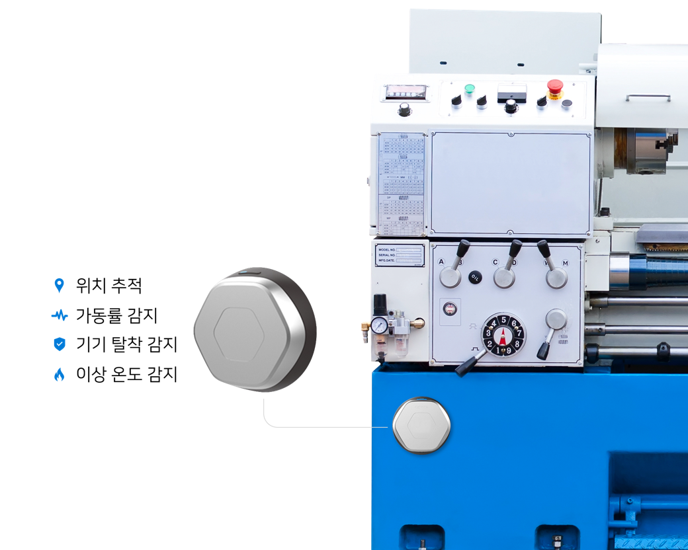

Main

Projects:
- - 동산담보 시스템 유지보수(20년 9월 ~ 21년 5월)
- - 개발 인원 : 4명
- - 담당 업무 : API 서버, 사이트 유지보수
동산이란 이동 가능한 모든 자산을 의미하며 설비, 재고 등이 포함됩니다. 기존 동산은 추적과 관리가 어려워 신뢰성 있는 자산으로 인식되지
않았습니다. 동산담보 시스템은 동산담보에 IoT디바이스를 부착하여 고객의 자산상태와 현재 위치를 24시간 모니터링하는 서비스입니다. 주 고객사는
IBK기업이고 그외 은행들도 서비스를 이용하고 있습니다.
맡았던 업무는 CS 파트에서 요청오는 에러를 수정하며 프로세스를 최대한 심플하게 개선하는데 초점을 두었습니다. 이후 데이터 파이프라인에서
발생하는 에러 수정과 서비스 운영을 메인으로 했습니다. 하루 10만 건 넘는 이벤트 요청이 들어왔는데, 소켓 서버에 로드를 줄이기 위해 성능 좋은
서버를 이용하기보단 비즈니스 로직들을 AWS Lambda로 분리해 운영했습니다. 그 결과 소켓 서버 CPU 사용률은 낮아졌고, Lambda로 분리했기에
유지보수성도 올라갔다고 느꼈습니다. Lambda 특성상 Java로 구현하면 처리 속도가 느려졌습니다. 때문에 다른 언어를 선택해야 했는데 데이터분석팀과
협업을 고려해 Python으로 구현한 게 기억나는 프로젝트입니다.
Technologies:
- - JAVA
- - JSP
- - Postgresql
- - Python Flask
- - AWS (EC2, RDS, DynamoDB, S3)
- - AWS (Lambda, SAM)
- - OS(Ubuntu)
Overview:

Pages: